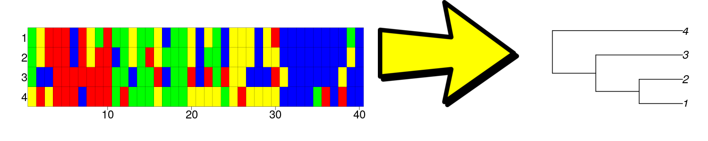

The
mcbettelogo.
One can generate a phylogeny from a DNA alignment and a model of evolution. Selecting an evolutionary model is non-trivial, as there are many. mcbette is an R package that determines the model that has most evidence for having generated the alignment, from a set of models. In this way, the model that is ‘simple enough, but not simpler’ can be used to generate a phylogeny.
Statement of need

Constructing a species phylogeny (at the right) from a DNA alignment (at the left) using an evolutionary model (the arrow).
mcbetteallows for selecting an evolutionary model from a set of models.
mcbette is an R package to do model comparison between a set of evolutionary models on a DNA alignment, which allows to select that model that is closest to the process consistent with the DNA alignment and species tree.
Unlike other methods, mcbette can both be installed and run from an R script, allowing one to run many analyses using different models, examine the results directly from R and integrate mcbette into an existing R pipeline.
Getting started
mcbette is aimed at being used by anyone interested in phylogenetics and assumes some basic knowledge about the field. The BEAST book [@Drummond:2015] serves as an excellent starting point about the field of phylogenetics, where the mcbette README and vignette show a simpled worked-out example. The evolutionary models are those allowed by the babette R package [@Bilderbeek:2018], which consist of (among others) a site model, clock model and tree model (see ‘Supported models’ below for an overview). babette is an R package to work with the phylogenetic tool BEAST2 [@Bouckaert:2019]. Additionally, mcbette uses the novel ‘NS’ ‘BEAST2’ package [@Russel:2019] to do the actual model comparison.
To see a demo of mcbette, see the vignette:
vignette(topic = "demo", package = "mcbette")Quirks
mcbette has two quirks. First, mcbette only works under Linux and Mac, because BEAST2 packages only work under Linux and Mac (that is, without using a GUI). Second, mcbette uses the rJava package, because BEAST2 is written in Java. Getting rJava properly installed is the hardest part to get mcbette working.
Supported models
At the time of writing, these are the BEAST2 models that babette supports:
- 1 site model: gamma site model
- 4 nucleotide substitution models: JC (after Jukes and Cantor), HKY (after Hasegawa, Kishino and Yano), TN (after Tamura and Nei), generalized time-reversible model
- 2 clock models: strict, relaxed log-normal
- 5 tree models: birth-death, coalescent Bayesian skyline, coalescent constant-population, coalescent exponential-population, Yule
To see these:
vignette(topic = "inference_models", package = "beautier")